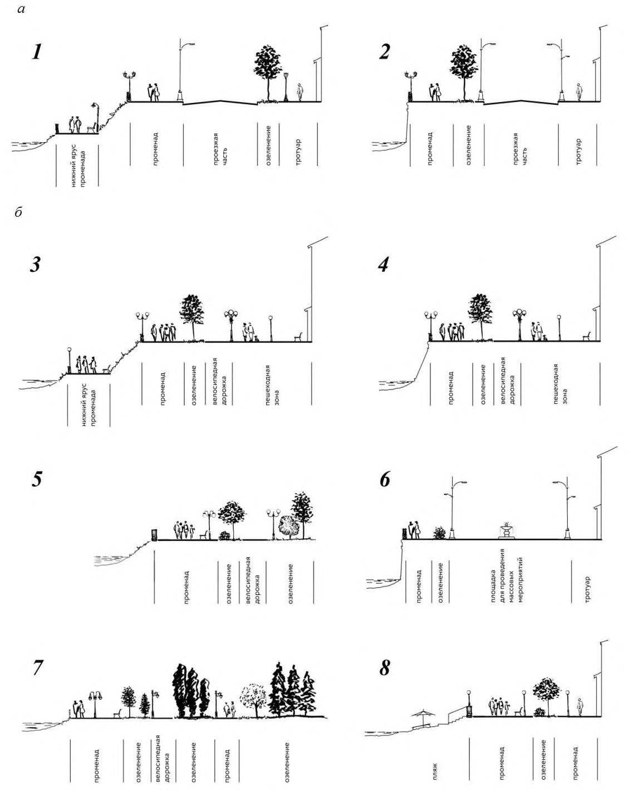

СП 398.1325800.2018 «Набережные. Правила градостроительного проектирования»
О документе: разработчики, утверждение, регистрация, ключевые слова
СВОД ПРАВИЛ
СП 398.1325800.2018
Издание официальное
Москва 2018
1 ИСПОЛНИТЕЛИ - Закрытое акционерное общество «Проектноизыскательский и научно-исследовательский институт промышленного транспорта» (ЗАО «ПРОМТРАНСНИИПРОЕКТ»), Общество с ограниченной ответственностью «Малое инновационное предприятие «МАДИ - Дорожные технологии» (ООО «МИП «МАДИ - ДТ»)
2 ВНЕСЕН Техническим комитетом по стандартизации ТК 465 «Строительство»
3 ПОДГОТОВЛЕН к утверждению Департаментом градостроительной деятельности и архитектуры Министерства строительства и жилищнокоммунального хозяйства Российской Федерации (Минстрой России)
4 УТВЕРЖДЕН приказом Министерства строительства и жилищнокоммунального хозяйства Российской Федерации от 29 ноября 2018 г. № 773/пр и введен в действие с 30 мая 2019 г.
5 ЗАРЕГИСТРИРОВАН Федеральным агентством по техническому регулированию и метрологии (Росстандарт)
В случае пересмотра (замены) или отмены настоящего свода правил соответствующее уведомление будет опубликовано в установленном порядке. Соответствующая информация, уведомление и тексты размещаются также в информационной системе общего пользования - на официальном сайте разработчика (Минстрой России) в сети Интернет
© Минстрой России, 2018
Настоящий нормативный документ не может быть полностью или частично воспроизведен, тиражирован и распространен в качестве официального издания на территории Российской Федерации без разрешения Минстроя России
Приложение В Примеры поперечного профиля набережных различных типов ................................................................................................. Приложение Г Элементы малых архитектурных форм на планировочных элементах и в функциональных зонах набережных …………… Библиография ............................................................................................................
Дата введения - 2019-05-30
УДК
ОКС 91.020
Ключевые слова: набережные, берег, река, море, озеро, водоем, здания, сооружения, комплексы, архитектурно-ландшафтное проектирование, благоустройство, террасы, спуски, ярусы, озеленение, устойчивость, расчет, освещение, берегозащитные сооружения, вдольбереговые течения, подпорные стенки, пляжи, волногасящие стены, буны, оградительные дамбы, надежность, риск
\_\_\_\_\_\_\_\_\_\_\_\_\_\_\_\_\_\_\_\_\_\_\_\_\_\_\_\_\_\_\_\_\_\_\_\_\_\_\_\_\_\_\_\_\_\_\_\_\_\_\_\_\_\_\_\_\_\_\_\_\_\_\_\_\_\_\_
Руководитель организации-разработчика ЗАО «ПРОМТРАНСНИИПРОЕКТ»
Исполнительный директор
А.Ю. Эглескалн
Руководитель
Зам. директора
Л.А. Андреева
разработки
по науке
Исполнитель
Начальник отдела
И.П. Потапов
Комплексных исследований,
стандартизации и логистического
сопровождения проектов
Соисполнители
Руководитель
разработки генеральный директор
ООО МИП «МАДИ-Дорожные технологии»
Ю.Э. Васильев
Исполнитель
С.Л. Майоров
Исполнитель
В.В. Талалай
Исполнитель
А.В. Кочетков
Исполнитель
Н.В. Щеголева
Введение
6 ВВЕДЕН ВПЕРВЫЕ
Настоящий свод разработан в целях повышения уровня безопасности при проектировании набережных в соответствии с федеральными законами от 27 декабря 2002 г. № 184-ФЗ «О техническом регулировании» [1] и от 30 декабря 2009 г. № 384-ФЗ «Технический регламент о безопасности зданий и сооружений» [2], а также [3]-[10].
Свод правил разработан авторским коллективом: ЗАО «ПРОМТРАНСНИИПРОЕКТ» (академик РАТ В.А. Сидяков , д-р техн. наук Л.А. Андреева , И.П. Потапов) ; ООО «МИП «МАДИ - ДТ» (руководитель темы - д-р техн. наук, проф. Ю.Э. Васильев ; д-р техн. наук, проф. А.В. Кочетков ; д-р транспорта С.Л. Майоров ; академик РАТ В.В. Талалай ); ГАУ «Институт Генплана Москвы» (канд. техн. наук И.А. Бахирев , канд. техн. наук Е.Н. Боровик , В.Ю. Громченко, В.В. Давыдов, Н.А Иванова, С.А. Каряева ); МОО «Профессиональный инженер» (канд. техн. наук Н.В. Щеголева ); АО «ЦНИИпромзданий» (канд. архитектуры А.И. Воскресенская , канд. архитектуры Д.К. Лейкина , Ю.В. Моторина ); при участии канд. техн. наук М.Г. Крестмейна , Ю.В. Громченко.
1Область применения
2Нормативные ссылки
В настоящем своде правил использованы нормативные ссылки на следующие документы:
ГОСТ 17.4.3.02-85 Охрана природы. Почвы. Требования к охране плодородного слоя почвы при производстве земляных работ
ГОСТ 17.5.3.04-83 Охрана природы. Земли. Общие требования к рекультивации земель
ГОСТ 31295.2-2005 (ИСО 9613-2:1996) Шум. Затухание звука при распространении на местности. Часть 2. Общий метод расчета
ГОСТ 31937-2011 Здания и сооружения. Правила обследования и мониторинга технического состояния
Правила градостроительного проектирования
Embankments. Regulation of urban planning
ГОСТ Р 50597-2017 Дороги автомобильные и улицы. Требования к эксплуатационному состоянию, допустимому по условиям обеспечения безопасности дорожного движения. Методы контроля
ГОСТ Р 51256-2011 Технические средства организации дорожного движения. Разметка дорожная. Классификация. Технические требования
ГОСТ Р 52282-2004 Технические средства организации дорожного движения. Светофоры дорожные. Типы и основные параметры. Общие технические требования. Методы испытаний
ГОСТ Р 52289-2004 Технические средства организации дорожного движения. Правила применения дорожных знаков, разметки, светофоров, дорожных ограждений и направляющих устройств
ГОСТ Р 52290-2004 Технические средства организации дорожного движения. Знаки дорожные. Общие технические требования
ГОСТ Р 52605-2006 Технические средства организации дорожного движения. Искусственные неровности. Общие технические требования. Правила применения
СП 20.13330.2016 «СНиП 2.01.07-85* Нагрузки и воздействия» (с изменением № 1)
СП 22.13330.2016 «СНиП 2.02.01-83* Основания зданий и сооружений»
СП 31.13330.2012 «СНиП 2.04.02-84* Водоснабжение. Наружные сети и сооружения» (с изменениями № 1, № 2, № 3)
СП 32.13330.2012 «СНиП 2.04.03-85 Канализация. Наружные сети и сооружения» (с изменениями № 1, № 2)
СП 34.13330.2012 «СНиП 2.05.02-85* Автомобильные дороги» (с изменением № 1)
СП 38.13330.2018 «СНиП 2.06.04-82* Нагрузки и воздействия на гидротехнические сооружения (волновые, ледовые и от судов)»
СП 41.13330.2012 «СНиП 2.06.08-87 Бетонные и железобетонные конструкции гидротехнических сооружений»
СП 42.13330.2016 «СНиП 2.07.01-89* Градостроительство. Планировка и застройка городских и сельских поселений»
СП 47.13330.2016 «СНиП 11-02-96 Инженерные изыскания для строительства. Основные положения»
СП 52.13330.2016 «СНиП 23-05-95* Естественное и искусственное освещение»
СП 58.13330.2012 «СНиП 33-01-2003 Гидротехнические сооружения. Основные положения» (с изменением № 1)
СП 59.13330.2016 «СНиП 35-01-2001 Доступность зданий и сооружений для маломобильных групп населения»
СП 78.13330.2012 «СНиП 3.06.03-85 Автомобильные дороги» (с изменением № 1)
СП 82.13330.2016 «СНиП III-10-75 Благоустройство территорий»
- СП 101.13330.2012 «СНиП 2.06.07-87 Подпорные стены, судоходные шлюзы, рыбопропускные и рыбозащитные сооружения»
СП 104.13330.2016 «СНиП 2.06.15-85 Инженерная защита территории от затопления и подтопления»
СП 113.13330.2016 «СНиП 21-02-99* Стоянки автомобилей»
СП 116.13330.2012 «СНиП 22-02-2003 Инженерная защита территорий, зданий и сооружений от опасных геологических процессов. Основные положения»
СП 131.13330.2012 «СНиП 23-01-99* Строительная климатология» (с изменениями № 1, № 2)
СП 140.13330.2012 Городская среда. Правила проектирования для маломобильных групп населения (с изменением № 1)
СП 276.1325800.2016 Здания и территории. Правила проектирования защиты от шума транспортных потоков
СП 277.1325800.2016 Сооружения морские берегозащитные. Правила проектирования
СанПиН 2.1.7.1287-03 Санитарно-эпидемиологические требования к качеству почвы
СанПиН 2.2.1/2.1.1.1200-03 Санитарно-защитные зоны и санитарная классификация предприятий, сооружений и иных объектов
Примечание - При пользовании настоящим сводом правил целесообразно проверить действие ссылочных документов в информационной системе общего пользования -на официальном сайте федерального органа исполнительной власти в сфере стандартизации в сети Интернет или по ежегодному информационному указателю «Национальные стандарты», который опубликован по состоянию на 1 января текущего года, и по выпускам ежемесячного информационного указателя «Национальные стандарты» за текущий год. Если заменен ссылочный документ, на который дана недатированная ссылка, то рекомендуется использовать действующую версию этого документа с учетом всех внесенных в данную версию изменений. Если заменен ссылочный документ, на который дана датированная ссылка, то рекомендуется использовать версию этого документа с указанным выше годом утверждения (принятия). Если после утверждения настоящего свода правил в ссылочный документ, на который дана датированная ссылка, внесено изменение, затрагивающее положение, на которое дана ссылка, то это положение рекомендуется применять без учета данного изменения. Если ссылочный документ отменен без замены, то положение, в котором дана ссылка на него, рекомендуется применять в части, не затрагивающей эту ссылку. Сведения о действии сводов правил целесообразно проверить в Федеральном информационном фонде стандартов.
3Термины, определения и сокращения
В настоящем своде правил применены термины по СП 32.13330, СП 42.13330, СП 59.13330, СП 82.13330, [6], а также следующие термины с соответствующими определениями:
- 3.1.1 берег
- Полоса земли, примыкающая к водному объекту (море, озеро, водохранилище, река, канал).
- 3.1.2 береговой откос
- Надводный крутой склон.
- 3.1.3 береговая зона ( здесь )
- Зона на берегу моря или водоема, состоящая из собственно берега (его надводной части) и подводного берегового склона.
- 3.1.4 видовая площадка
- Площадка, обеспечивающая возможность панорамного обзора окружающей местности.
- 3.1.5 водно-зеленый каркас
- Элемент природного каркаса населенного пункта, включающий водные объекты и прилегающие к ним территории туристско-рекреационного назначения.
- 3.1.6водозаборные сооружения
- Гидротехническое сооружение для забора воды в водовод из водоема, водотока или подземного водоисточника.Источник: ГОСТ 19185-75, статья 55
- 3.1.7 водовыпуск
- Гидротехническое сооружение для сброса очищенных сточных вод в водоем.
- 3.1.8зона рекреации водного объекта
- Водный объект или его участок с прилегающим к нему берегом, используемый для отдыха.Источник: ГОСТ 17.1.5.02-80, приложение
- 3.1.9 набережная
- Линейный элемент планировочной структуры населенного пункта, располагаемый вдоль берега и предназначенный для движения и отдыха пешеходов или для движения пешеходов и транспорта, представляющий собой открытую благоустроенную территорию общего пользования на поверхности берегоукрепительного сооружения, непосредственно примыкающего к водному объекту или находящегося на удалении от береговой линии.
- 3.1.10 пляж
- Участок побережья естественного или искусственного водоема (океана, моря, озера, водохранилища, реки, пруда) с прибрежными водами (акваторией), оборудованный и пригодный для организованного отдыха, купания и приема оздоровительных и профилактических процедур.Источник: ГОСТ Р 55698-2013, статья 3.1
- 3.1.11 подпорная стенка
- Элемент вертикальной планировки в виде специальной конструкции, сдерживающий подвижку грунта и часто имеющий декоративную обработку.Источник: ГОСТ 28329-89, статья 63
- 3.1.12 променад
- Пешеходная коммуникация, используемая с прогулочными целями.
- 3.1.13 ступопандусы
- Переходная конструкция между пандусом и лестницей, имеет широкие низкие ступени с наклонной поверхностью; размещают на склонах с крутизной 25-83 ‰. В настоящем своде правил применены следующие сокращения: АО - архитектурное освещение; ИМТС - индивидуальные малые транспортные средства (самокаты, роликовые коньки, сегвеи, гироскутеры, моноколеса и др.); МАФ - малые архитектурные формы; МГН - маломобильные группы населения; ОВОС - оценка воздействия на окружающую среду; ПДК - предельно допустимая концентрация; ФО - функциональное освещение.
4Общие положения
При разработке концепции использования прибрежных территорий следует обосновывать выбор участков сохранения естественных берегов и участков устройства набережных.
5Градостроительные требования к проектированию набережных
5.1Общие требования
- генерального плана населенного пункта;
- проектов планировки (территорий и линейных объектов);
- проектной документации, связанной с формированием и/или реконструкцией набережных, размещением объектов различного функционального назначения, примыкающих к набережным.
- разработать общую структуру сохранения и развития водно-зеленого каркаса населенного пункта во взаимосвязи с системой туристскорекреационных зон;
- определить основные функциональные зоны прибрежных территорий с учетом функционального зонирования населенного пункта и функциональный состав объектов на прилегающих к набережным территориях, устанавливать участки сохранения естественных берегов, а также участки, где будут сформированы набережные и/или проведена их реконструкция;
- определить основные пешеходные и транспортные коммуникации, обеспечивающие доступность прибрежных территорий для населения.
- детализировать проектные решения по формированию поперечного и продольного профиля набережных, принятые в составе генерального плана, развитию транспортно-пешеходной инфраструктуры на набережных и прилегающих территориях и организации транспортного обслуживания проживающих и работающих на этой территории, а также посетителей набережных;
- разработать систему обслуживания территории общественным транспортом;
- выполнить расчет требуемого количества машино-мест для парковки автомобилей посетителей набережной и прилегающей застройки общественного назначения, а также для хранения автомобилей постоянного населения, проживающего в жилых домах на прилегающих территориях, и предварительно наметить места размещения гаражно-стояночных объектов;
- разработать схему инженерного обеспечения территории.
5.2Классификация набережных
- транспортно-пешеходные;
- бестранспортные.
На транспортно-пешеходных набережных допускается предусматривать зоны для проведения массовых мероприятий.
- набережная, сформированная как пешеходная улица, площадь или пешеходная зона, соединенная с пешеходными улицами или их участками на прилегающих к набережной территориях;
- набережная-променад, в том числе:
- а) проходящая по застроенным территориям;
- б) находящаяся в рекреационной зоне;
- набережная с зонами для проведения массовых мероприятий;
- набережная-парк;
- многофункциональная набережная.
- непосредственно примыкающие к водным объектам (с подпорными стенками различных типов в соответствии с 6.2);
- находящиеся на удалении от водного объекта (включающие территории пляжного, рекреационного или иного назначения между береговой линией и набережной).
5.3Функциональное назначение набережных и функциональный состав застройки
Анализ существующего положения прибрежной территории следует выполнять согласно форме приложения Б. При этом должен быть выполнен анализ соотношения участков набережной различного функционального назначения, расположенных вдоль всего берега в границах населенного пункта, по следующим позициям:
- фактическое использование прибрежной территории по функциям (жилая, общественная, производственная, природная, неиспользуемая);
- удаленность станций и остановок общественного транспорта;
- наличие и виды пешеходных коммуникаций;
- протяженность участков непрерывных коммуникаций для пешеходного движения, включая набережные;
- неиспользуемые участки набережной вдоль береговой линии, которые могут быть использованы для общественной функции и создания ландшафтно-рекреационных пространств;
- участки затрудненного доступа к видовым площадкам, пристаням и спускам к воде с учетом существующей сети дорог на набережных, наличие и виды пешеходных переходов;
- доля береговой линии водного объекта, занятая производственной застройкой, препятствующей доступу населения к набережной;
- фактическое использование акватории водоема для размещения предприятий питания, стационарных сценических площадок на воде, плавучих пристаней и причалов (дебаркадеров);
- состояние существующих сооружений по очистке поверхностного стока.
- градостроительных условий и местоположения;
- значения набережной в формировании окружающей застройки;
- расположения и сочетания участков с повышенным рельефом;
- ориентации и конфигурации улично-дорожной сети;
- застройки прилегающих участков;
- назначения по участкам территорий природного комплекса (природоохранные, природно-рекреационного назначения, резервные земли природного комплекса);
- общественного назначения (административного, культурнопросветительного, спортивно-рекреационного, лечебно-оздоровительного и других видов).
- жилая застройка;
- застройка общественного назначения, включая объекты курортного назначения;
- застройка производственного назначения;
- организованные рекреационные территории, площадки для отдыха, детские, спортивные и видовые площадки;
- природные комплексы и особо охраняемые природные территории;
- естественный ландшафт.
6Планировочные и архитектурно-пространственные решения набережных
6.1Общие требования
Места примыкания к территории набережной зон общественных центров рекомендуется выделять архитектурными доминантами.
6.2Состав поперечного профиля набережной
- формирующие берег профили, обращенные к водной поверхности набережной;
- проезжие части улиц и дорог (для транспортно-пешеходных набережных);
- тротуары, эспланады, променады;
- стоянки легкового и туристского автотранспорта;
- зоны парков, скверов, бульваров;
- площадки для массовых мероприятий;
- озелененные полосы и площадки и др.
6.3Отдельные планировочные элементы
Формирующие берег профили набережных
- откосный профиль;
- откосно-вертикальный профиль;
- криволинейный профиль, предназначенный для набережных морей, рек и каналов при амплитуде приливно-отливных колебаний уровня воды до 5-6 м;
- вертикальный профиль, предназначенный для набережных со свободной высотой 6-8 м;
- профиль с обратным уклоном, применяемый на набережных, подверженных воздействиям прибойных и разбивающихся волн;
- двухъярусный профиль, используемый для набережных водных объектов с высоким паводком (нижний ярус набережных в отдельных случаях допускается устраивать затопляемым);
- террасированный многоуровневый профиль из нескольких укрепленных террас.
Подпорные стенки набережных
- поддерживающие насыпи;
- ограждающие выемки;
- для укрепления берегов рек, морей, водоемов;
- иные.
- низкие - до 10 м;
- средние - 10-20 м;
- высокие - более 20 м.
- с откосами земляного полотна, подмостовыми конусами, дамбами обвалований и регуляционных сооружений;
- с берегами водоемов, пересекаемых, вдоль расположенных, спрямляемых и канализируемых русел рек и малых водотоков;
- с неразмываемыми подмостовыми руслами;
- с входными и выходными руслами малых водопропускных и водоотводных сооружений;
- с кюветами, водоотводными канавами, водовыпусками из откосных лотков и рассеивающих трамплинов и других водоотводных и водогасящих сооружений;
- с водоотводными и водопропускными фильтрующими и очистными сооружениями;
- с элементами защиты подтопляемых насыпей, подмостовых конусов, опор мостов и регуляционных сооружений в период проявления опасных разрушающих воздействий паводков;
- руслорегулирующих сооружений и регуляционных сооружений в бассейнах рек с неустойчивым характером русловых процессов.
- на береговых уступах, удаленных от прямого удара нетрансформированной волны (например, на пологих склонах затопленных речных долин или широких, слабо размываемых террасах);
- в верхней части береговых укреплений (в зоне временного затопления).
Видовые площадки
В качестве видовых площадок допускается использовать пешеходные мосты.
Видовые площадки допускается предусматривать на мостах, предназначенных для движения транспорта и пешеходов, при наличии широких тротуаров (или широкого тротуара с одной стороны) и при обеспечении требуемой ширины для прохода транзитных пешеходных потоков.
Лестничные сходы и спуски к воде
7Транспортная и пешеходная инфраструктура набережных
7.1Общие требования
- обслуживание посетителей набережных и объектов прилегающей застройки различного функционального назначения (при наличии застройки общественного назначения);
- обслуживание постоянно проживающего населения (при наличии застройки жилого назначения и др.);
- обеспечение возможности проезда транспортных средств специального назначения - автомобилей скорой помощи, пожарной охраны, полиции, мусороуборочной техники, уборочной техники, грузового транспорта бытового назначения;
- обеспечение связи набережных и примыкающих городских территорий, разъединенных водными объектами;
- обеспечение связи между ярусами набережных;
- обеспечение, при необходимости, условий для размещения электрозарядной инфраструктуры (для электромобильного общественного и личного транспорта, ИМТС).
- остановочных пунктов на расстоянии не более 150 м от видовых площадок и основных объектов туристского показа для организации подвоза посетителей на маршрутном транспорте (с обычным или малогабаритным подвижным составом);
- стоянок автобусов непосредственно вблизи видовых площадок и объектов туристского показа на удалении не более 150 м (для обслуживания организованных групп туристов).
7.2Транспортно-пешеходные набережные. Инфраструктура для движения пешеходов и транспорта
7.3Бестранспортные набережные. Пешеходные коммуникации и пространства
Для проезда транспортных средств специального назначения на пешеходных набережных следует выделять зоны проезда автомобильного транспорта, предусматривая усиление конструктивных элементов покрытия, в соответствии с ожидаемой нагрузкой от проезда транспорта.
7.4Обеспечение связанности набережных
При использовании паромов для перевозки транспортных средств и пассажиров следует предусматривать перед причалами площадки для накопления транспортных средств перед въездом на паром. При этом следует обеспечивать безопасность движения пешеходов по набережной с помощью размещаемых МАФ или ограждений.
Требования к обеспечению безопасности пассажиров и пешеходов при применении канатных дорог и фуникулеров приведены в [16].
7.5Велодвижение и движение индивидуальных малых транспортных средств
7.6Стоянки легковых автомобилей для обслуживания набережной
- места для парковки автомобилей посетителей набережных и работающих и посетителей объектов прилегающей застройки - в соответствии с СП 42.13330;
- места для хранения легковых автомобилей постоянного населения, проживающего в жилой застройке, примыкающей к набережной, -в соответствии с СП 42.13330;
- гостевые стоянки для посетителей жилых зон - из расчета 40 машиномест на 1000 жителей.
8Требования к элементам благоустройства и озеленения
набережных
8.1Общие требования
При проектировании комплексного благоустройства набережных допускается применять: декоративные покрытия транспортных и пешеходных путей; древесно-кустарниковые насаждения; микрорельеф; площадки (видовые, для отдыха, игровые и др.); МАФ; декоративные бассейны и водные устройства; объекты визуальной информации, монументально-декоративного искусства; светильники наружного освещения проезжих частей и тротуаров улично-дорожной сети, подсветки фасадов зданий и сооружений, объектов озеленения.
- существующее и прогнозируемое градостроительное использование прилегающей территории (в том числе баланс территории, пешеходной и транспортной доступности и др.) населенного пункта в целом;
- классификация набережных в соответствии с 5.2;
- общее решение территории и функциональное назначение набережной, ее формы и размеры, планируемое размещение объектов различного функционального назначения, транспортной инфраструктуры, озелененных и водных пространств;
- поперечный профиль набережных (с учетом приложения В);
- сохранение исторически сложившегося визуально-ландшафтного восприятия набережной;
- климатические, экологические и социально-культурные факторы;
- применяемые планировочные элементы (подпорные стенки, молы, пирсы, волноломы, террасы (наличие, размер и их конфигурация), береговые откосы, склоны);
- применяемые конструкции и материалы;
- условия естественного и искусственного освещения;
- наличие санитарно-защитных и охранных зон;
- формирование безбарьерной среды.
- единства объемно-планировочной структуры и благоустройства территории набережных с транспортно-планировочным и архитектурноландшафтным решением населенного пункта в целом;
- учета вопросов охраны окружающей среды, природных особенностей, (комплексная климатическая, микроклиматическая и санитарногигиеническая характеристика); особенностей ландшафта и возможностей его использования;
- особенностей функционального зонирования территории набережной;
- функционального и композиционного единства открытых пространств набережных и архитектурного решения прилегающих к их территории зданий и сооружений, открытых и озелененных пространств.
- создания единой системы приемов благоустройства, обеспечивающей функциональные и пространственные связи набережных;
- уточнения размещения композиционных акцентов, системы функциональных и визуальных связей между ними, скоординированной с объемно-планировочным решением набережной, системой транспортных и пешеходных коммуникаций;
- выделения ведущего элемента благоустройства в общем композиционном решении, определяющего архитектурно-планировочные приемы комплексного благоустройства.
8.2Открытые и озелененные пространства
Размеры озелененных территорий набережных курортных зон следует предусматривать из расчета 100 м² на одно место в гостиницах, санаторнокурортных и оздоровительных учреждениях.
В курортных зонах климатических районов IV-V (согласно СП 131.13330) участки озелененных территорий общего пользования допускается уменьшать, но не более чем на 50 %.
- посадка деревьев и кустарников в грунт;
- живые изгороди, топиары, солитеры;
- посадки зеленых насаждений в специально подготовленные архитектурные формы - модули;
- цветники из однолетних и многолетних растений;
- газон - партерный, мавританский, обыкновенный;
- вертикальное;
- мобильное (кашпо);
- комбинированное.
- симметрично - по сторонам проезжей части или пешеходного бульвара;
- асимметрично -с преобладанием, как правило, посадок непосредственно около воды.
- одиночные посадки деревьев и кустарников в грунт;
- рядовые (линейные) посадки вдоль полос движения;
- групповые и аллейные посадки деревьев и кустарников;
- создание визуальных разделительных барьеров между полосами движения транспорта и пешеходов;
- акцентирование парадных, наиболее значимых в визуальном отношении зон;
- создание многоярусного каркаса из растительности (деревья, высокие и низкие кустарники, цветочное оформление из многолетних и однолетних растений) при использовании рельефа местности.
Выбор типа озеленения зависит от функционального назначения и размера террас, пешеходной полосы, наличие велодорожки (или трассы ИМТС), близости проезжей части.
Ассортимент лиственных, хвойных пород, лиственных пород для вертикального озеленения следует принимать в соответствии с СП 82.13330.
- трельяжи и шпалеры - для организации уголков тихого отдыха, укрытия от солнца, ограждения площадок, технических устройств и сооружений;
- перголы -в качестве перехода между площадками или архитектурными объектами;
- цветочницы и вазоны - для озеленения со сменными композициями посадочного материала при размещении на открытых общественных территориях.
Таблица 8.1 Характеристики площадок различного функционального назначения, устраиваемых на набережных 1), 2)
| Назначение площадки | Размерность | Минимальная норма площади на одного посетителя, |
|---|---|---|
| 1 Разгрузочные у входов | м² | Не менее 0,5 3) |
| 2 Видовые | м² | Не менее 0,7 |
| 3 Площадки отдыха для взрослого населения | м² | Не менее 3,0 |
| 4 Игровые для детей: | ||
| - дошкольного возраста | м² | Не менее 7,0 |
| - школьного возраста | Не менее 5,0 | |
|---|---|---|
| 5 Для массовых мероприятий | м² | Не менее 10,0 |
| 6 Танцевальные | м² | Не менее 2,0 |
| 7 Для размещения уличного оборудования | м² | Не менее 0,3 |
| 8 Контейнерные площадки и площадки для сбора мусора | м² | По расчету (согласно СП 42.13330.2016, приложение К) |
- 3) С учетом пропускной способности отходящих от входов главных пешеходных коммуникаций (дорог, аллей, эспланад).
Примечание - Материалы покрытий площадок принимаются в соответствии с техническим заданием с учетом СП 82.13330.
Таблица 8.2 Характеристики пешеходных коммуникаций в парковых зонах набережных
| Виды пешеходных коммуникаций | Минимальная ширина пешеходной коммуникации, м | Назначение коммуникации |
|---|---|---|
| 1 Главные пешеходные дороги, аллеи и эспланады | Ширина пешеходной коммуникации определяется расчетом 1) , но принимается не менее 6,0 | Пропуск потоков посетителей по основным направлениям пешеходных связей от главных входов на территорию парковой зоны |
| 2 Распределительные пешеходные дороги | Ширина пешеходной коммуникации определяется расчетом 1) , но принимается не менее 2,25 | - Распределение посетителей по территории парковой зоны набережной; - обеспечение пешеходных связей между объектами посещения, площадками отдыха, видовыми точками; - предназначены также для прогулок |
| 3 Дорожки | Не менее 1,0-1,5 | - Дополнительные пешеходные коммуникации для прогулок; |
| - обеспечение подходов к отдельным элементам благоустройства | ||
|---|---|---|
| 4 Тропы | Не менее 0,75-1,0 | Одиночное движение посетителей |
1) Ширина пешеходной коммуникации определяется расчетом в зависимости от ожидаемой интенсивности пешеходного движения по данному направлению. Пропускную способность одной стандартной полосы пешеходного движения шириной 0,75 м следует принимать из расчета: на главной дороге - 400 чел. в час пик; на распределительных дорогах - 300 чел. в час пик.
Число полос движения при расчете следует округлять до целого в большую сторону. К полученному расчетом значению следует прибавить ширину одной запасной полосы, равную 0,75 м.
Примечание - Материалы покрытий пешеходных коммуникаций принимают в соответствии с техническим заданием с учетом СП 82.13330.
8.3Малые архитектурные формы
8.3.2. При выборе МАФ следует использовать:
- каталоги готовых изделий, допущенных к применению в порядке, предусмотренном действующим законодательством Российской Федерации;
- изделия, обеспечивающие удобство эксплуатации.
При этом архитектурное решение парапетов набережных предусматривается как один из значимых элементов общего архитектурного решения набережной.
Устройство ограждений на открытых территориях в составе набережных следует предусматривать с характеристиками согласно таблице 8.3.
Таблица 8.3 Характеристики ограждений на открытых территориях в составе набережных
| Тип ограждения | Высота ограждения, мм |
|---|---|
| 1 Ограждение элементов благоустройства | |
| 1.1 Видовые площадки | 1200 |
| 1.2 Площадки для отдыха взрослых | 600 |
|---|---|
| 1.3 Площадки игровые для детей: - дошкольного возраста - школьного возраста | 900 600 |
| 1.4 Площадки для массовых мероприятий | 1200 |
| 1.5 Пешеходные дорожки | 600 |
| 1.6 Газонные ограды низкие | 300 |
| 1.7 Декоративные ограждения | 600 |
| 1.8 «Зеленые изгороди» из кустарника | Не нормируется |
| 1.9 Приствольные ограждения | 900 |
| 2 Ограждения транспортных проездов | 2 Ограждения транспортных проездов |
| 2.1 Ограждения (тумбы) для транспортных проездов и стоянок автомобилей | От 1000 до 2000 |
| 2.2 Для защиты от шума прилегающей территории | По расчету согласно ГОСТ 31295.2, СП 276.1325800 |
| 3 Технические ограждения | 3 Технические ограждения |
| 3.1 Для размещения уличного оборудования | 1200 |
| 3.2 Контейнерные площадки и площадки для сбора мусора | 900 |
| Примечание - Типы и материалы ограждений принимаются в соответствии с техническим заданием на проектирование. | Примечание - Типы и материалы ограждений принимаются в соответствии с техническим заданием на проектирование. |
8.4Освещение
8.4.1 При проектировании набережных следует предусматривать:
- наружное архитектурное освещение в соответствии с СП 52.13330, с учетом восприятия в дневное и ночное время элементов осветительных установок;
- декоративное освещение.
- показатели по искусственному освещению территории набережной и наружному АО;
- надежность работы установок согласно [17];
- экономичность и энергоэффективность применяемых установок;
- число элементов осветительных установок;
- удобство управления и обслуживания при различных режимах работы установок.
9Инженерная подготовка и защита территорий набережных
9.1Общие требования
- нагрузок, вызываемых воздействиями водоема на берега и сооружения;
- инженерно-геологических условий и рельефа водоема;
- использования защищаемой территории в градостроительных, промышленных и транспортных целях;
- требований к прибрежной полосе.
- регулирование режимов отведения грунтовых вод, поверхностного стока;
- укрепление высоких оползневых склонов контрфорсами из камня и щебня;
- мероприятия по предохранению естественных и искусственных контрфорсов оползневого массива от повреждения.
Для повышения локальной и общей устойчивости откосов следует проводить террасирование склонов, посадку зеленых насаждений.
9.2Отвод поверхностных вод
- для зон капитальной застройки - не менее 2 м;
- для зон зеленых насаждений - не менее 1 м.
10Требования по обеспечению безопасности
10.1Общие требования
10.2Безопасность движения транспорта и пешеходов
- минимальное число точек пересечения транспорта и пешеходов;
- условия видимости транспортных средств и пешеходов конфликтных и встречного направлений движения;
- обеспечить требуемые скоростные режимы движения.
- устройство разделительных полос с озеленением и частой посадкой деревьев;
- установка бетонных тумб;
- устройство иных ограждений, имеющих достаточную удерживающую силу (с расчетной нагрузкой от грузового автомобиля).
10.3Экологическая безопасность
АПриложение А. Требуемые исходные данные для проектирования набережных
А.1 При проектировании набережных и берегозащитных сооружений на них следует учитывать природные факторы и условия, в которых будут работать сооружения (ветер, ветровая волна, волна от судов, течение, переменный уровень воды, волнение, ледовые явления, транспорт наносов и связанные с ним деформации пляжа и подводного берегового склона, характеристики приливной зоны, в том числе и для состояний «река/море» и др.).
А.2 Данные о природных факторах и условиях в районе набережной города или курорта должны являться основой для расчета и проектирования.
А.3 Для получения сведений о природных условиях в пределах набережной следует использовать данные наблюдений, проводимых на сети федерального органа исполнительной власти, осуществляющего функции по оказанию государственных услуг в области гидрометеорологии и смежных с ней областях, мониторинга окружающей среды, ее загрязнения, государственному надзору за проведением работ по активному воздействию на метеорологические и другие геофизические процессы. При отсутствии данных наблюдений должна быть развернута временная сеть мониторинга природных условий.
А.4 Инженерно-геологические и гидролитодинамические наблюдения в районе набережной следует проводить согласно СП 47.13330, СП 38.13330.
А.5 В проектной документации гидротехнических сооружений набережной должны быть определены критерии их безопасности согласно СП 58.13330 и сроки их пересмотра.
А.6 Батиметрические и топографические съемки в районе набережной следует выполнять для построения карт и схем топобатиметрического плана надводной и подводной частей береговой полосы в масштабе от 1:2 000 до 1:25 000.
А.7 Инженерно-геологические изыскания должны выполняться для получения фактических материалов о геологическом строении побережья набережной, физико-механических характеристиках грунтов надводной и подводной частей берегового склона, а также об опасных геологических процессах (оползнях, обвалах и др.) в пределах защищаемого участка побережья и участков, прилегающих к нему.
А.8 При разработке берегозащитных мероприятий должны быть учтены все факторы, характеризующие экологическое состояние защищаемого участка набережной с оценкой степени воздействия на окружающую среду с учетом раздела 10, а также с учетом требований СП 277.1325800 и [15].
А.9 В составе проектной документации набережной по натурным наблюдениям следует разрабатывать структурную схему и технические решения системы мониторинга состояния ее сооружений, природных и техногенных воздействий на них по ГОСТ 31937.
А.10 Для грунтов следует определять: гранулометрический состав; теплофизические свойства, объемный вес; удельную плотность; весовую влажность; влажность; пористость; консистенцию.
А.11 В составе проектной документации набережной следует предусматривать раздел по натурным наблюдениям за работой сооружений набережной и их состоянием в процессе строительства и эксплуатации.
А.12 Раздел по натурным наблюдениям должен включать:
- перечень контролируемых нагрузок и воздействий на сооружения набережной;
- перечень контролируемых и диагностических показателей состояния сооружения набережной и его основания, включая критерии безопасности;
- программу и состав инструментальных и визуальных наблюдений;
- технические условия и чертежи на установку контрольноизмерительной аппаратуры, спецификацию измерительных приборов и устройств;
- инструкции по проведению натурных наблюдений за работой и состоянием сооружений набережной.
БПриложение Б. Форма таблицы для проведения функционального анализа прибрежной территории водных объектов
| № п/п | Функциональное назначение территории города или курорта | Протяженность вдоль берегов водоема, км | Всего по городу или курорту |
|---|---|---|---|
| 1 | Природная | ||
| 1 | %по округу | ||
| 1 | %по функциональной группе | ||
| 2 | Природно-производственная | ||
| 2 | %по округу | ||
| 2 | %по функциональной группе | ||
| 3 | Общественная | ||
| 3 | %по округу | ||
| 3 | %по функциональной группе | ||
| 4 | Жилая | ||
| 4 | %по округу | ||
| 4 | %по функциональной группе | ||
| 5 | Производственная | ||
| 5 | транспорт | ||
| 5 | %по округу | ||
| 5 | %по функциональной группе | ||
| 6 | Неиспользуемая | ||
| 6 | %по округу | ||
| 6 | %по функциональной группе | ||
| 7 | Всего протяженность берегов | ||
| 7 | %по округу | ||
| 7 | %по городу |
ВПриложение В. Примеры поперечного профиля набережных различных типов
1 - двухъярусная набережная с откосами (верхний ярус - улица с пешеходной эспланадой; нижний ярус - променад); 2 - одноярусная набережная с подпорной стенкой; 3 -двухъярусная набережная, сформированная как пешеходная улица (верхний ярус пешеходная улица; нижний ярус - променад); 4 - одноярусная набережная, сформированная как пешеходная улица; 5 - набережная-променад; 6 - участок набережной для проведения массовых мероприятий; 7 - набережная-парк; 8 - набережная с отступом от водного объекта и устройством пляжа на территории между водным объектом и набережной

Рисунок А.1 -Выборочные примеры поперечного профиля транспортно-пешеходных ( а ) и бестранспортных набережных ( б )
ГПриложение Г. Элементы малых архитектурных форм на планировочных элементах и в функциональных зонах набережных
Таблица Г.1
№ п/п
Планировочные элементы набережных и функциональные зоны
Типы элементов МАФ
Утилитарные уличные фонари
Торшерное освещение
Парковое освещение
Ограждения безопасности пребывания населения
Ограждения (тумбы) транспортных проездов, стоянок
Декоративные ограждения
Ограничительные элементы
Газонные ограждения
Скамьи без спинки
Опоры скамей для МГН
Скамьи со спинками
Монументально-декоративные формы
Декоративные камни, валуны и пр., кустарниковые насаждения
Арки, перголы, кашпо
Цветочницы
Урны
Информационно-навигационная система, арт-объекты
Уличное оборудование (кабины туалетов, автоматы различных типов)
1 Транспортно-пешеходные коммуникации и пространства
1.1
Дороги
+
+
+
+
+
+
+
+
+
1.2
Велодорожки и трассы ИМТС
+
+
+
+
+
+
+
1.3
Стоянки легковых автомобилей
+
+
+
+
+
+
+
+
+
1.4
Велостоянки
+
+
+
+
+
+
+
+
+
+
2 Зоны и площадки различного функционального назначения на набережных
| Типы элементовМАФ | Типы элементовМАФ | Типы элементовМАФ | Типы элементовМАФ | Типы элементовМАФ | Типы элементовМАФ | Типы элементовМАФ | Типы элементовМАФ | Типы элементовМАФ | Типы элементовМАФ | Типы элементовМАФ | Типы элементовМАФ | Типы элементовМАФ | Типы элементовМАФ | Типы элементовМАФ | Типы элементовМАФ | Типы элементовМАФ | Типы элементовМАФ | Типы элементовМАФ | ||
|---|---|---|---|---|---|---|---|---|---|---|---|---|---|---|---|---|---|---|---|---|
| № п/п | Планировочные элементы набережных и функциональные зоны | Утилитарные уличные фонари | Торшерное освещение | Парковое освещение Ограждения безопасности пребывания | населения Ограждения (тумбы) транспортных | проездов, стоянок | Декоративные ограждения | Ограничительные элементы Газонные ограждения | Скамьи без спинки | Опоры скамей для МГН | Скамьи со спинками | Монументально-декоративные формы Декоративные камни, валуны и пр., | кустарниковые насаждения Арки, перголы, кашпо Цветочницы | Урны Информационно-навигационная | система, арт-объекты | Уличное оборудование (кабины туалетов, автоматы различных типов) | ||||
| 2.1 | Площади для массовых мероприятий | + | + | + | + | + | + | + | + | + | + | + + | + | + | + | |||||
| 2.2 | Набережная - пешеходная улица | + | + | + | + | + | + | + | + | + | + | + + | + | + | + | |||||
| 2.3 | Набережная - рекреационный променад | + | + | + | + | + | + | + | + | + | + | + | + + | + | + | |||||
| 2.4 | Набережная - парк | + | + | + | + | + | + | + | + | + + | + | + | ||||||||
| 2.5 | Многофункциональная набережная | + | + | + + | + | + | + | + | + | + | + | + | + + | + | + | |||||
| 3 Технические зоны | ||||||||||||||||||||
| 3.1 | Контейнерные площадки | + | + | + | + | + | + | |||||||||||||
| 3.2 | Зоны размещения технических сооружений набережной | + | + | + | + | + | + | + |
Библиография
- [1] Федеральный закон от 27 декабря 2002 г. № 184-ФЗ «О техническом регулировании»
- [2] Федеральный закон от 30 декабря 2009 г. № 384-ФЗ «Технический регламент о безопасности зданий и сооружений»
- [3] Федеральный закон от 23 ноября 2009 г. № 261-ФЗ «Об энергосбережении и о повышении энергетической эффективности и о внесении изменений в отдельные законодательные акты Российской Федерации»
- [4] Федеральный закон от 22 июля 2008 г. № 123-ФЗ «Технический регламент о требованиях пожарной безопасности»
- [5] Федеральный закон от 10 января 2002 г. № 7-ФЗ «Об охране окружающей среды»
- [6] Федеральный закон от 3 июня 2006 г. № 74-ФЗ «Водный кодекс Российской Федерации»
- [7] Федеральный закон от 29 декабря 2004 г. № 190-ФЗ «Градостроительный кодекс Российской Федерации»
- [8] Закон РСФСР от 15 декабря 1978 г. «Об охране и использовании памятников истории и культуры»
- [9] Федеральный закон от 25 июня 2002 г. № 73-ФЗ «Об объектах культурного наследия (памятниках истории и культуры) народов Российской Федерации»
- [10] Федеральный закон от 8 ноября 2007 г. № 257-ФЗ «Об автомобильных дорогах и о дорожной деятельности в Российской Федерации и о внесении изменений в отдельные законодательные акты Российской Федерации»
- [11] Постановление Правительства Российской Федерации от 29 апреля 2016 г. № 377 «Об утверждении Правил определения местоположения береговой линии (границы водного объекта), случаев и периодичности ее определения и о внесении изменений в Правила установления на местности границ водоохранных зон и границ прибрежных защитных полос водных объектов»
- [12] СП 33-101-2003 Определение основных расчетных гидрологических характеристик
- [13] Руководство по проектированию береговых укреплений на внутренних водоемах / Министерство жилищно-коммунального хозяйства РСФСР, Гипрокоммунстрой. - М.: Стройиздат, 1984
- [14] СП 32-103-97 Проектирование морских берегозащитных сооружений
- [15] Постановление Правительства Российской Федерации от 12 июля 2017 г. № 832 «О внесении изменений в постановление Совета Министров Правительства Российской Федерации от 23 октября 1993 г. № 1090»
- [16] Приказ Федеральной службы по экологическому, технологическому и атомному надзору от 6 февраля 2014 г. № 42 «Об утверждении Федеральных норм и правил в области промышленной безопасности «Правила безопасности пассажирских канатных дорог и фуникулеров» (зарегистрирован в Министерстве юстиции Российской Федерации 13 мая 2014 г., регистрационный № 32252)
- [17] ПУЭ Правила устройства электроустановок (7-е изд.)
- [18] ВСН 486-86 Обеспечение охраны водной среды при производстве работ гидромеханизированным способом
- [19] МДС 13-5.2000 Правила создания, охраны и содержания зеленых насаждений в городах Российской Федерации
- [20] Федеральный закон от 29 декабря 2017 г. № 463-ФЗ «О внесении изменений в Федеральный закон «Об общих принципах организации местного самоуправления в Российской Федерации» и отдельные законодательные акты Российской Федерации» \_\_\_\_\_\_\_\_\_\_\_\_\_\_\_\_\_\_\_\_\_\_\_\_\_\_\_\_\_\_\_\_\_\_\_\_\_\_\_\_\_\_\_\_\_\_\_\_\_\_\_\_\_\_\_\_\_\_\_\_\_\_\_\_\_\_\_